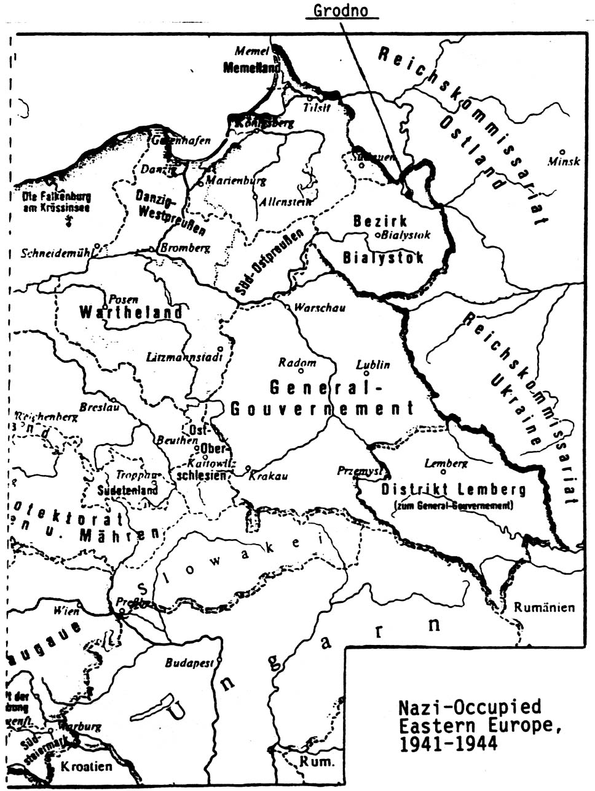
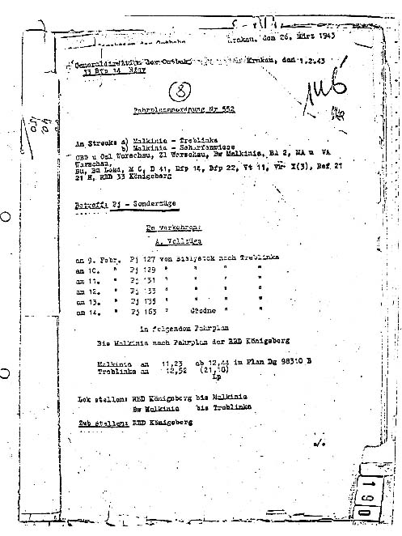
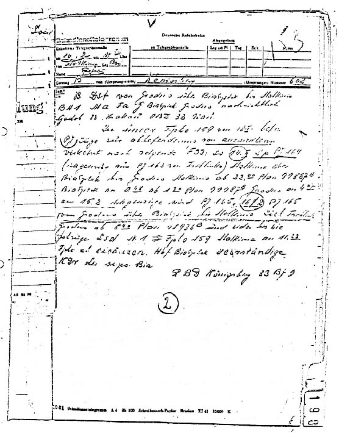

Home
| Preface | Cologne
Judgment | Bielefeld Trial | Appendices
Appendices
GLOSSARY OF GERMAN TERMS
AND ABBREVIATIONS
Amtskommissar,
Subdistrict Commissioner, key official in civil administration of occupied
Bialystok District, responsible to Kreiskommissar.
Barbarossa, code name for the German invasion of the USSR, June 22,
1941. Grodno was occupied by German troops that same day.
BdS, Befehlshaber der Sicherheitspolizei und des SD, Supreme Commander
over several KdS offices, responsible directly to RSHA in Berlin.
Bezirk Bialystok, Bialystok District, special administrative district
in occupied Poland, attached to but not incorporated into the Reich as an
autonomous district of East Prussia in late July 1941.
Einsatzqruppe, action group, 'mobile killing unit'; special SS/SD
murder squads responsible for liquidation (by mass shooting) of Jews and
others behind the German armies advancing into the Soviet Union, composed
of up to six Einsatzkommandos. Formed in June 1941 and active in Eastern
Europe until May 1943.
Einsatzkommando, smaller component of an Einsatzgruppe.
Ereignismeldungen UdSSR, "Field Reports USSR," a series of periodic
reports on the genocidal and antipartisan activities of the Einsatzgruppen
and their subformations.
Gauleiter, District Chief, key official in Nazi Party regional hierarchy.
There were a total of 42 Gaue in the Party structure in the Reich, plus
the Auslandsqau (Foreign Gau).
General-Gouvernment, Government-General, largest portion of German-occupied
Poland, including Warsaw, Cracow and Lvov.
Gestapo, Geheime Staatspolizei, Secret State Police, a branch of
the Security Police (Sipo) and SS coordinated within the RSHA, headed by
Heinrich Mueller.
Grenzpolizei, Frontier Police, controlled by SD.
Hefte von Auschwitz (Auschwitz Notes), official publication of the
Auschwitz Museum.
HSSPF, Hoeherer SS- und Polizeifuehrer, Higher SS and Police Leader,
personal district-level representative of Heinrich Himmler, commanding officer
of SS and police behind the front lines.
IdS, Inspekteur der Sicherheitspolizei, Inspector of Security Police,
regional head of Gestapo and Kripo.
Judenrat, body elected by the Jewish community under German occupation
and responsible to German authorities for implementation of all directives.
Judenreferat, Dept. for Jewish Affairs, section in Gestapo dealing
with all matters pertaining to Jews.
Judenreferent, head of Judenreferat
Juedische Ordnungspolizei, Jewish Regular Police, uniformed ghetto
police force, controlled by the Gestapo.
JRM (Judenratsmeldungen), "Judenrat Announcements," official publication
of the Judenrat.
KdO, Kommandeur der Ordnungspolizei, Commander of the Regular Police
KdS, Kommandeur der Sicherheitspolizei und des SD, regional coordinator
of Kripo, Gestapo and SD in the occupied territories
Kreiskommissar, Regional Commissioner, high-ranking official in civil
administration within occupied Bialystok District.
Kripo, Kriminalpolizei, Criminal Police, likewise a branch of the
Security Police (Sipo) and SS.
Landrat, District Council Head, the head of the district administration
in the Prussian Higher Civil Service.
NSDAP, Nationalsozialistische Deutsche Arbeiterpartei, Nazi Party
Ordnungspolizei (Orpo), Regular Police, consisting of Schutzpolizei
(National Police, Municipal Police) and Gendarmerie (Rural Police), incorporated
into the SS organization.
Pj Abbreviation for Polnische Juden (Polish Jews), used to designate
transport trains to camps such as Treblinka and Auschwitz.
Regierungspraesident, Local Governor. Civil administration in Bialystok
District was under Erich Koch, Regierungspraesident of the East Prussian
provincial government in Koenigsberg.
Regierungsrat, 'Government Councillor', lowest rank in Higher Civil
Service
Reichsfuehrer SS und Chef der Deutschen Polizei, Reich Leader of
the SS and Chief of German Police, Heinrich Himmler's official title
RGB1., Reichsgesetzblatt, Reich Legal Gazette
RSHA, Reichssicherheitshauptamt, Reich Security Main Office, SS agency
set up in October 1939, incorporating SD and Security Police, headed by
Reinhard Heydrich, and later by Ernst Kaltenbrunner. The Gestapo was Office
IV in the RSHA. The RSHA was officially entrusted with implementing the
"Final Solution."
RSHA Transports, Deportation trains ordered by RSHA and supplied
by the Reichsbahn.
SD, Sicherheitsdienst, security and intelligence service of the SS
Sicherheitspolizei (SiPo), Security Police, component of the SS consisting
of Gestapo and Kripo.
SSPF, SS- und Polizeifuehrer, deputy of HSSPF at sub-district level
Sonderkommando, similar to an Einsatzkommando, but operating in a
civil government area.
Standgericht, special court-martial, a summary tribunal organized
by the Security Police and SD to deal with 'crimes' by non-Germans against
Germans or the German occupational infrastructure. Instituted in Bialystok
District in late April 1942, and presided over by the KdS.
Waffen-SS, combat units of the SS.
APPENDIX A
Introduction
to Documents Concerning the Destruction
of the Jews of Grodno 1941-1944
The least known and most important collection of archives to date concerning
the Final solution of the Jewish question contains the pre-trial and actual
trial records in Germany of every attempt to judge Nazi war criminals responsible
for the persecution of Jews.
These archives contain not only the indictments, the verdicts, the records
of the trial and the notes taken by the Court during its sessions, but also
minutely detailed preparatory pre-trial material. Because of its detail,
the pre-trial investigation of cases which, for various reasons never went
to trial, may be just as important as that of the cases that ended up in
convictions.
It is difficult to comprehend the scope of this material. The archives of
some trials include tens of thousands of pages which have never been made
public. They would have been put in the public domain had there not been
a very important omission: the fact that no Jewish organization has been
constituted since the war to find and to support civil plaintiffs for each
trial concerning the Final solution. These civil plaintiffs would, in effect,
have had the right to obtain all documents concerning their own trial. Thus
all the documentary material could have been directed to the most competent
documentation center for the Final solution, Yad Vashem in Jerusalem. Because
of the failure of Jews to assume responsibility in this matter, it is now
necessary to depend on Germany to safeguard, organize and make public this
precious body of material.
The study of the archives of each of these trials will provide historians
with vital information and allow them to describe in more accurate detail
events concerning the Final solution, one of the most tragic and important
occurrences in the history, not only of the Jewish people, but of the German
people as well.
These judicial archives deal with numerous geographic sectors, with depositions
of survivors, gathered from all over the world, as well as depositions taken
from Germans, both witnesses to and agents of the Final solution.
These archives which are, at present, almost impossible to consult and which
until now were only used for judicial purposes, would now be available for
more transcendent historical purposes.
It is in the interest of Germany to take necessary measures as quickly as
possible to insure the future security of these judicial archives containing
material that is of inestimable historical interest and whose collection
has been costly for the German tax payer. It must be remembered at the same
time that the German state will be held responsible if any harm comes to
these valuable documents because of the manner in which they are, at present,
being stored.
Currently these dossiers are dispersed throughout the archives of the various
states (Laender) where the trials took place, usually in the archives controlled
by the Public Prosecution, or less often, in the various Laender archives.
The future of this extraordinary documentary material and its exploitation
for historical research can be effectively assured only if it is collected
in one single center, where it can be entrusted, at least temporarily, to
a judicial power that can assure its preservation while providing access
to qualified researchers from all over the world.
By its aims, its experience and its competence, the Central Office of the
Land Judicial Authorities for the Investigation of National-Socialist Crimes
("Zentrale Stelle der Landesjustizverwaltungen zur Aufklarung nationalsozialistischer
Verbrechen") in Ludwigsburg is the obvious choice to be this center. It
already has at its disposal vast amounts of historical documentation concerning
the Final solution documentation which made it possible to open most of
the Nazi war criminal trials that took place in Germany. The new material
would complement its present archives and would enable Ludwigsburg, in the
21st century, to function, probably under the auspices of a university,
as the most complete center of research, study and documentation on the
Final solution in the world. The world expects no less of Germany.
The collection of the totality of the German judicial archives concerning
the Final solution at Ludwigsburg would fill a deep gap in Germany where,
forty years after the end of World War II, there is still no real center
of studies in this particular realm.
If the German legislature decides to accept this measure, whose cost is
limited, the German state will have fulfilled one of its fundamental duties
to the victims of Nazi racism and totalitarianism in the struggle to keep
memory alive; not to mention having shown the way and prepared the work
for future historical studies.
The five volumes of documents dedicated to the destruction of the Jews of
Grodno that we have amassed from German judicial archives are an example
of the irreplaceable role of these archives, most of which are as yet unexploited,
for the historian.
Our friend, Dr. Felix Zandman, who at fifteen escaped from the hell of Grodno,
asked us how it would be possible to leave an authentic historical record
of the terrible events that so marked his childhood, destroyed his family,
friends and community. He felt that it was his duty to record those facts
to which only he and a few other survivors from Grodno can bear testimony,
in the limited time before these witnesses are lost to death.
We didn't conceal from our friend the fact that the most important historical
materials which could be recouped were those found in the archives of the
trials at which he himself presented testimony concerning Grodno. It is
also noteworthy that the trial at Bielefeld (for the Bialystok district
which includes Groclno) and at Cologne (for Grodno) resulted in significant
convictions and provoked the suicides of several members of the upper echelon
responsible for the Final solution in that sector: Schott, on July 15,1959;
Zimmermann, on December 31,1965; and Sandhop on the very day that he was
to appear as a witness at Cologne, March 25,1968.
The research and efforts of public prosecutors and judges, the testimonies
of Jewish survivors before both the public prosecutors and the Court, the
interrogations of German witnesses and agents of the Final solution, important
judicial documents; all describe and authenticate the events that took place
in Grodno. It became our goal to make these events known and to have them
inscribed in the historical record. Gaining access to the archives was our
first priority. Having succeeded in doing this, we decided to publish the
results of these efforts in a very limited edition, destined only for centers
of historical research on the holocaust and to the largest public libraries
and universities of the world.
We have undertaken this action in the hope that our initiative will be understood
by the German judicial system. If German political circles could decide
in 1979 that there would be no statute of limitations for murders, so that
Nazi criminals might be judged until the last one has died, it shows that
they are now certainly ready to assume their other responsibilities in this
domain. We are convinced that in the near future all the judicial archives
concerning the Final solution will be collected by Germany, who always always
showed a special talent of organization.
Our work on Grodno include five volumes:
Volume 1: The eyewitness accounts of the Jewish survivors living
in the West as will as accounts recorded in Poland and in the Soviet Union;
Volume 2: The depositions of German witnesses and the statements
of the German agents of the "Final Solution";
Volume 3: The search for truth by German justice; and the rare historical
documents of the years 1941-1944 concerning Grodno;
Volume 4: Trial records concerning Grodno from the trial at Bielefeld
in 1966-1967, dealing with the Bialystok district, where Grodno was to be
found;
Volume 5: The trial which took place in Cologne in 1967-1968, of
the two men responsible for the 'Final Solution' in Grodno Wiese and Errelis.
A sixth volume will be dedicated to the depositions of important witnesses
who, at the time of the two trials, were not yet found, as well as to documentary
material which we hope to obtain from the Soviet Union.
This basic research documentation will permit an historian to write a precise
work on the Final solution in Grodno. This is the maximum which can be done
and serves as a patient and modest homage to the thousands of victims of
Grodno and the surrounding area. We are indebted German justice for its
efficient contribution to this tribute.
Beate and Serge Klarsfeld
APPENDIX B
Tables of Contents,
Vols I-V, Documents
VOLUME I
A: Accounts by Jewish
survivors residing in the West
| Doc
|
|
|
Pages |
|
|
|
|
| 1-
ASH Adam |
New
York |
03.21.66
|
4-Jan |
| 2-
BELL Robert |
New
York |
02.28.66
|
9-May |
| 3-
BEREN Jacob |
New
York |
05.25.66
|
13-Oct |
| 4-
BEREN Max |
New
York |
06.08.66
|
14-17 |
| 5-
BINSTOCK Pesa |
Philadelphia |
03.16.66
|
18-21 |
| 6-
BROIDE Hillel |
Tel
Aviv |
01.25.66
|
22-27 |
| 7-
COHEN Samuel |
New
York |
03.01.66
|
28-29 |
| 8-
DERMAN Aron |
Chicago
|
03.22.66
|
30-32 |
| 9-
DERMAN Lisa |
Chicago
|
03.22.66
|
33-34 |
| 10-
FRANK Fannia |
Oklahoma
|
09.27.61
|
35-37 |
| 11-
FRANK Fannia |
|
|
38-40 |
| 12-
FRANK Fannia |
Houston
|
03.09.66 |
42-50 |
| 13-
FREILICHMANN Josef |
|
1948 |
51-54 |
| 14-
FREILICHMANN Josef |
Tel
Aviv |
01.31.66
|
55-59 |
| 15-
GARBULSKI Sam |
New
York |
05.26.66
|
60-63 |
| 16-
GOLD Gary |
Philadelphia |
03.17.66
|
64-66 |
| 17-
GOLUB Max |
San
Jose |
05.07.57
|
67 |
| 18-
GOLUB Max |
San
Jose |
01.04.61
|
68 |
| 19-
GOLUB Max |
New
York |
09.13.65
|
69-70 |
| 20-
GOLUB Max |
New
York |
02.24.66
|
71-75 |
| 21-
GORDON Ely and Zelda |
Los
Angeles |
10.21.60
|
76 |
| 22-
GORNICK Ely |
Missouri
|
1960 |
77-79 |
| 23-
GORNICK Ely |
Kansas
City |
03.25.66
|
80-84 |
| 24-
GOZANSKI Samuel |
|
|
85 |
| 25-
GROZALSKI Leiser |
Boston
|
03.10.66
|
86-88 |
| 26-
GROZALSKI Sofia |
Boston
|
03.10.66
|
89-91 |
| 27-
ILIN EfroTm |
Australia
|
01.19.61
|
92 |
| 28-
ILIN EfroTm |
Melbourne |
01.27.66
|
93-98 |
| 29-
JELGIN Henry |
Boston
|
03.11.66
|
99-101 |
| 30-
JELGIN Rita |
Boston
|
03.11.66
|
102-105 |
| 31-
JERLIK Ester |
Tel
Aviv |
02.08.66
|
106-109 |
| 32-
JEZIERSKI Elijahu |
|
|
110-114 |
| 33-
JEZIERSKI Elijahu |
Tel
Aviv |
01.31.66
|
115-119 |
| 34-
JOFFE Ester |
|
|
120 |
| 35-
KAPELUSHNIK Lea |
New
York |
06.06.66
|
121-123 |
| 36-
KERSH Sylvia |
New
York |
03.01.66
|
124-127 |
| 37-
KESSELMAN Rita |
Boston
|
03.11.66
|
128-132 |
| 38-
KORASZ Abraham |
Berlin
|
09.08.60
|
133-135 |
| 39-
KORNFELD Judith |
New
York |
06.14.66
|
136-139 |
| 41-
KORNFELD Judith |
New
York |
06.14.66
|
140-141 |
| 42-
KOTLER Genia |
Tel
Aviv |
02.03.66
|
142-144 |
| 43-
KOWALSKI Max |
New
York |
06.07.66
|
145-149
|
| 44-
KOWIENSKI Jack |
New
York |
03.10.66
|
150-155 |
| 45-
KOWIENSKI Jack |
New
York |
06.02.66
|
156-158 |
| 46-
KREMER Michael |
New
York |
02.09.66
|
159-167 |
| 47-
KULIK Mordechaj |
|
1948 |
168-172 |
| 48-
KULIK Mordechaj |
Tel
Aviv |
01.24.66
|
173-180 |
| 49-
KURARZ Sima |
Tel
Aviv |
01.24.66
|
181-183 |
| 50-
LAZAR Irving |
New
York |
03.01.66
|
184-185 |
| 51-
LAZAR Simcha |
|
01.12.63
|
186-187 |
| 52-
LEWIN Nathan |
Buenos
Ayres |
12.19.60
|
188-189 |
| 53-
LIPSZYC Zwi |
Tel
Aviv |
02.03.66
|
190-194 |
| 54-
LOREN Ruben |
Chicago
|
03.22.66
|
195-197 |
| 55-
MONKASH Martin |
New
York |
03.10.66
|
198-201 |
| 56-
NESS Robert |
Chicago
|
03.23.66
|
202-204 |
| 57-
NOTES Mosche |
Tel
Aviv |
01.24.66
|
205-209 |
| 58-
ORBACH Josef |
Melbourne |
10.08.62
|
210-212 |
| 59-
ORBACH Josef |
Melbourne |
02.10.66
|
213-219 |
| 60-
ORBACH Josef |
Cologne
|
05.12.66
|
220-228 |
| 61-
PALKES Lisa |
New
York |
05.23.66
|
229-230 |
| 62-
PIAZKOVSKI Rachel |
Buenos
Ayres |
12.19.60
|
231-232 |
| 63-
PIAZKOVSKI Rachel |
Buenos
Ayres |
02.11.66
|
233-242 |
| 64-
POSNIAK Morris |
New
York |
06.03.66
|
243-246 |
| 65-
POSNIAK Sam |
New
York |
05.23.66
|
247-251 |
| 66-
RABINOWICZ Yehuda |
Melbourne |
03.25.66
|
252-256 |
| 67-
RAPAPORT Fenia |
New
York |
06.20.66
|
257-259 |
| 68-
REIZER Leib |
Wellington |
07.07.60
|
260-267 |
| 69-
REIZER Leib |
Wellington |
12.14.65
|
268-277 |
| 70-
REIZER Leib |
Wellington |
12.31.65
|
278 |
| 71-
ROSIANSKI Josef |
Beersheya
|
02.07.66
|
279-281 |
| 72-
SCHIFF Anna |
Los
Angeles |
03.30.66
|
282-287 |
| 73-
SCHIFF Blake |
Los
Angeles |
03.30.66
|
288-291 |
| 74-
SCHULKES Boris |
Victoria
|
10.10.60
|
292-294 |
| 75-
SCHULKES Boris |
Australia
|
10.10.62
|
295-297 |
| 76-
SCHULKES Boris |
Australia
|
10.10.62
|
298-301 |
| 77-
SCHULKES Boris |
Melbourne |
01.26.66
|
302-312 |
| 78-
SCHULKES Boris |
New
York |
03.14.66
|
313-316 |
| 79-
SCHULKES Boris |
Cologne
|
04.30.66
|
317-331 |
| 80-
SCHULKES Boris |
Australia
|
06.07.68
|
332-333 |
| 81-
SISUN Regina |
New
York |
06.13.66
|
334-337 |
| 82-
SISUN Sydney |
New
York |
06.13.66
|
338-342 |
| 83-
SMILOVICH Millie |
New
York |
03.01.66
|
343-344 |
| 84-
SOLNICKI Pola |
Buenos
Ayres |
12.19.60
|
345-346 |
| 85-
SORIN Bella |
Boston
|
03.09.66
|
347-340 |
| 86-
SORIN Leo |
Boston
|
03.09.66
|
350-352 |
| 87-
SRUGO Bella |
Buenos
Ayres |
12.19.60
|
353-354 |
| 88-
SRUGO Bella |
Tel
Aviv |
02.04.66
|
395-359 |
| 89-
STABINSKI Sol |
New
York |
05.25.66
|
390-363 |
| 90-
STEIN Miriam |
Tel
Aviv |
02.08.66
|
364 |
| 91-
STEINBERG Jacob |
New
York |
05.25.66
|
365-370 |
| 92-
TAMIR Menachem |
Tel
Aviv |
01.25.66
|
371 |
| 93-
TOPOW Bernard |
Philadelphia |
03.10.66
|
372-374 |
| 94-
TRACHTENBERG Leon |
New
York |
03.08.66
|
375-382 |
| 95-
TWARKOWSKI Josef |
New
York |
05.25.66
|
383-384 |
| 96-
UTIANSKI Mina |
New
York |
06.06.66
|
385-388 |
| 97-
WEBER Leon |
New
York |
06.10.66
|
389-302 |
| 97bis-
WIENER Maria |
Cleveland
|
03.21.66
|
393-394 |
| 98-
WINICKI Gottlieb |
Buenos
Ayres |
12.19-60
|
395-397 |
| 99-
WINICKI Gottlieb |
Buenos
Ayres |
04.19.66
|
398-403 |
| 100-
ZANDMAN Felix |
Philadelphia |
Dec-60 |
404 |
| 101-
ZANDMAN Felix |
Philadelphia |
12.05.60
|
405 |
| 102-
ZANDMAN Felix |
Philadelphia
|
03.17.66
|
406-411 |
| 103-
ZARUCHES Rubin |
New
York |
03.08.66 |
412-414 |
|
|
|
|
B: Accounts recorded in Poland and the Soviet Union
| 104-
BARANOWSKI Piotr |
Wroclaw |
03.10.48
|
417-419
|
| 105- BLINOWSKA
Tamila |
Warsaw |
11.18.63
|
420-421
|
| 106-
DANIELCZYK Feliks |
Wroclaw |
03.08.48
|
422-423
|
| 107-
ESERSKAJA Beila |
Grodno |
02.19.65
|
424-426
|
| 108-
FERSTER Janina |
Warsaw |
01.21.64
|
427-428
|
| 109-
GLEMBOWSKI Wladimir |
Grodno |
02.27.65
|
429-432
|
| 110-
GUTMAN Karol |
Warsaw |
1963
|
433
|
| 111-
JUKOWSKI Salomon |
Grodno |
02.27.65
|
434-438
|
| 112-
KIERSNOWSKA Anna |
Katowice |
05.29.63
|
439-441
|
| 113-
KLOWSKY David |
Grodno |
02.17.65
|
442-446
|
| 114-
LEWKOWICZ Sonia |
Poland |
|
447-449
|
| 115-
LIPEZ Scheima |
Grodno |
02.19.65
|
450-452
|
| 116-
LUCKIEWICZ Alexander |
Poland |
|
453-454
|
| 117-
MODZELOWSKA Zofia |
Wroclaw |
03.10.48
|
455-458
|
| 118-
MODZELOWSKA Zofia |
Pulawa |
07.19.53
|
459-461
|
| 119-
NAHOWITSCH Jakob |
Grodno |
02.18.65
|
462-465
|
| 120-
NISELEWITSCH Hosid |
Grodno |
02.18.65
|
466-468
|
| 121-
OMILJANOWICZ Bronislawa |
Wroclaw |
07.01.63
|
469-471
|
| 122-
ROCHWERGER Meier |
Poland |
|
472-474
|
| 123-
SIELICKI Eudoksja |
Katowice |
06.27.63
|
475-477
|
| 124-
SUCHOCKI EDWARD |
Wroclaw |
03.10.48
|
478-479
|
| 125-
SZCZUKA Stanislaw |
Poland |
|
480-481
|
| 126-
SZOCH Maria |
Bialystock |
02.10.66
|
482-483
|
| 127-
WASNIOWSKA Zofia |
Lodz |
03.10.48
|
484-487
|
| 128-
WILCZEWSKI Zenon |
Bialystock |
10.31.47
|
488-490
|
| 129-
ZABECKI Franciszek |
Treblinka |
12.21.45
|
491-493
|
|
|
|
|
Volume II
Accounts by German
witnesses or perpetrators of the Final Solution
| Document |
|
Pages |
|
| 1-
ALTENLON Wilhelm |
09.21.60 |
9-Jan
|
| 2-
ALTENLON Wilhelm |
09.06.61 |
18-Oct
|
| 3-
ALTENLOH Wilhelm |
08.19.63 |
19-29
|
| 4-
ALTENLON Wilhelm |
08.20.63 |
30-34
|
| 5-
BAUMANN Artur |
02.20.61 |
35-39
|
| 6-
BIESENBACH Julius |
02.20.67 |
40-41
|
| 6bis-
BOHNKE Fritz |
10.31.60 |
42-42bis
|
| 7-
BREDOW Leberecht |
11.23.60 |
43-48
|
| 8-
BROCKMANN Heinrich |
10.07.60 |
49-59
|
| 9-
DIBUS Richard |
|
60-63
|
| 10-
DIBUS Richard |
|
64-68
|
| 11-
DIBUS Richard |
06.26.61 |
69-75
|
| 12-
DIBUS Richard |
02.09.63 |
76
|
| 13-
DIDRIGKEIT Hans |
08.26.66 |
77-78
|
| 14-
ERRELIS Heinz |
12.06.60 |
79-83
|
| 15-
ERRELIS Heinz |
09.25.61 |
84-93
|
| 16-
ERRELIS Heinz |
08.13.63 |
94-106
|
| 17-
ERRELIS Heinz |
09.28.65 |
107-118
|
| 18-
ERRELIS Heinz |
03.16.67 |
119-123
|
| 19-
GLAS Alfons |
|
124-126
|
| 20-
GRAU Friedrich |
03.28.68 |
127-130
|
| 21-
GRUNWALD Emil |
11.07.60 |
131-134
|
| 22-
GRUNWALD EMIL |
10.26.65 |
135-140
|
| 23-
HEIMBACH Lothar |
03.03.60 |
141
|
| 24-
HEIMBACH Lothar |
06.30.61 |
142-149
|
| 25-
HERLING Karl |
03.28.68 |
150-152
|
| 26-
HOLLGER Paul |
11.17.60 |
153-154
|
| 27-
HOLLGER Paul |
10.27.65 |
155-157
|
| 28-
KOENECKE Ernst |
11.25.61 |
158-162
|
| 29-
KOSSACK Werner |
04.27.66 |
163-164
|
| 30-
KOSSACK Werner |
05.12.66 |
165-166
|
| 31-
KUNZE Walter |
04.05.68 |
167
|
| 32-
LANGHANS Otto |
08.26.66 |
168-170
|
| 33-
LIMPERT Helmut |
09.30.60 |
171-174
|
| 34-
LIMPERT Helmut |
10.24.60 |
175-179
|
| 35-
MICHALSEN Georg |
02.23.61 |
180-187
|
| 36-
MUCKTER Heinrich |
04.09.68 |
188-189
|
| 37-
MUELLER Rudolf |
10.04.45 |
190
|
| 38-
NAUJOCKS Max |
01.09.62 |
191-192
|
| 39-
NIESTROJ Franz |
10.12.65 |
193-196
|
| 40-
NIESTROJ Franz |
10.27.65 |
197-204
|
| 41-
NEUSER Richard |
02.24.66 |
205-206
|
| 42-
OSTERODE Franz |
07.22.63 |
207-211
|
| 43-
OSTERODE Franz |
10.14.65 |
212-219
|
| 44-
PITSCH Hans |
02.24.66 |
220-221
|
| 45-
PLAUMANN Herman |
01.07.60 |
222-225
|
| 46-
PRILL Heinrich |
01.11.62 |
226-229
|
| 47-
RAUTENBERG Fritz |
08.30.66 |
230-232
|
| 48-
SANDHOP Werner |
10.06.65 |
233-238
|
| 49-
SCHREIBER Erwin |
08.08.61 |
239-244
|
| 50-
STEIN Georg |
01.30.62 |
245-251
|
| 51-
TERRAHE Josef |
04.08.68 |
252-253
|
| 52-
TIETZ Walter |
08.30.66 |
254-258
|
| 53-
TOMM Otto |
11.03.60 |
259-260
|
| 53bis-
TOMM Otto |
10.21.65 |
261-264
|
| 54-
TOMM Else |
10.21.65 |
265-269
|
| 55-
WIESE Kurt |
10.23.63 |
270-274
|
| 56-
WIESE Kurt |
|
275-284
|
| 57-
WIESE Kurt |
04.08.65 |
285-288
|
| 58-
WIESE Kurt |
09.21.65 |
289-299
|
| 59-
WIESE Kurt |
09.22.65 |
300-316
|
| 60-
WIESE Kurt |
10.04.65 |
317-321
|
| 61-
WIESE Kurt |
07.04.66 |
322-327
|
| 62-
WIESE Kurt |
07.11.66 |
328-337
|
| 63-
WIESE Kurt |
07.12.66 |
338-349
|
| 64-
WIESE Kurt |
07.13.66 |
350-359
|
| 65-
WIESE Kurt |
07.14.66 |
360-364
|
VOLUME III
A: German Justice
seeking the truth:
| Document |
|
Pages
|
| |
|
|
| 1-
08.14.59 |
Bill
of indictment against Zimmermann |
12-Jan
|
| 2-
09.01.59 |
Note
of the Public Prosecutor(P.P.),Bielefeld |
13
|
| 3-
09.12.59 |
P.P.
to the British Embassy |
14-15
|
| 4-
11.25.59 |
Acquittal
of Zimmermann in Bielefeld |
16-26
|
| 5-
03.23.60 |
Polish
Ministry of Justice to P.P.,Bielefeld |
27-31
|
| 6-
04.06.60 |
Note,P.P.
Ludwigsburg |
32-33
|
| 7
- 04.06.60 |
French
Embassy to Foreign Ministry,Bonn |
34-35
|
| 7bis-
04.27.60 |
The
search for the Zimmemann file |
36-37
|
| 8-
06.09.60 |
Note
by Ludwisburg Center on "Aktion Reinhard" and its judicial
consequences |
38-44
|
| 9-
06.27.60 |
Note
by Ludwisburg center on Treblinka |
45-48
|
| 10-
08.11.60 |
P.P.,Dortmund
to P.P.,Bielefeld |
49-50
|
| 11-
09.30.60 |
Hamburg
administration gives information on Tomm |
51-52
|
| 12-
10.17.60 |
P.P.,Ludwigsburg
to Mr Frejdowicz,Paris |
53
|
| 13-
12.06.60 |
Dr.
Felix Zandman to P.P.,Ludwigsburg |
54
|
| 14-
12.15.60 |
P.P.,Ludwigsburg
to dr.Fe1ix Zandman |
55
|
| 15-
12.15.60 |
Dr.Felix
Zandman to P.P.,Ludwigsburg |
56
|
| 16-
05.23.61 |
Israeli
Police:list of witnesses |
57-61
|
| 17- |
Translation
of excerpts of S.Lazar's book |
62-68
|
| 18-
11.21.61 |
Bill
of indictment against Filbert in Berlin |
69-80
|
| 19- |
Bill
of indictment against Dibus and Errelis in Bielefeld |
81-82
|
| 20-
12.15.64 |
Bill
of indictment against Zimmermann, Dibus, Heimbach and Errelis |
83-89
|
| 21- |
Bill
of indictment against Wiese and Errelis |
90-125
|
| 22-
03.25.65 |
Jewish
Documentation Center,Vienna remits |
|
|
Soviet
eye witness accounts |
126
|
| 23-
04.06.65 |
Grodno
archives |
127-128
|
| 24-
07.27.65 |
P.P.,Dortmund,requests
that Wiese and Errelis should be pursued |
129-144
|
| 25-
08.05.65 |
Note
by P.P.,Dortmund,concerning Nazi Police in Grodno |
145-163
|
| 26- |
Form
letter to witnesses by Judge Neumann, Cologne |
164
|
| 27-
09.29.65 |
Judge
Neumann to eye witness L.Reizer |
165
|
| 28-
10.06.65 |
Dr.Felix
Zandman to Judge Neumann |
166
|
| 29-
10.07.65 |
L.Reizer
to Judge Neumann |
167
|
| 30-
01.05.66 |
Translated
letter from L.Reizer to P.P.Dortmund |
168-169
|
| 31-
09.29.65 |
Historic
Institute,Munich to Judge Neumann |
170
|
| 32-
10.05.65 |
Federal
Archives to Judge Neumann |
171
|
| 33-
10.06.65 |
Judge
Neumann to Federal Geographic Adm. |
172
|
| 34-
10.08.65 |
Federal
Geog.Adm. to Judge Neumann |
173
|
| 35-
10.06.65 |
Judge
Ne'um'ann to National Geographic Institute |
174
|
| 36-
10.15.65 |
National
Geog. Institute to Judge Neumann |
175
|
| 37-
10.12.65 |
Military
Archives to Judge Neumann |
176
|
| 38-
11.10.65 |
Federal
Archives to Judge Neumann |
177
|
| 39-
11.12.65 |
Historic
Institute,Munich to Judge Neumann |
178
|
| 40-
10.22.65 |
Judge
Neumann to Israeli Police |
179-191
|
| 41-
11.30.65 |
Instructions
concerning hearing of witnesses given to German Consulates in United
States; list of witnesses in United States,Australia and Argentina |
192-204
|
| 42-
08.31.66 |
Note
by Judge Neumann on Wiese and Errelis |
205-208
|
| 43-
04.04.67 |
Note
by P.P.,Dortmund on Wiese and Errelis |
209-275
|
| 43bis-
04.04.67 |
Act
of Accusation against Wiese and Errelis |
276-350
|
| 44-
07.21.67 |
Decision
of the Court concerning the charges against Wiese and Errelis |
351
|
| 45-
09.06.67 |
Errelis
demands documents from Yad Yashen |
352
|
| 46-
10.06.67 |
Warrant
of arrest against Errelis |
353-354
|
| 47- |
List
of witnesses |
355-362
|
| 47bis- |
Schedule
of the trial against Wiese and Errelis |
363
|
| 48- |
The
last search for witnesses |
364
|
B: Documents:
| 1- |
06.06.46 |
Jewish-Historical
Commission,Bialystok |
367-370
|
| 2- |
10.01.48 |
Excerpts
from documents concerning Grodno |
371-372
|
| 3- |
|
Excerpts
from documents concerning Grodno |
373-376
|
| 4-5-6- |
|
Maps
of Grodno |
377-381
|
| 7- |
12.19.41 |
German
decree |
382
|
| 8
to 22- |
|
Official
German bill board notices |
383-
398
|
| 23- |
|
Organizational
diagram,Nazi Police,district of Bialystok |
399
|
| 24
to 26- |
07.09.41 |
German
document |
400
|
|
07.13.41 |
" "
|
401
|
|
07.24.41 |
" "
|
402
|
| 27- |
02.01.43 |
Minister
of Armaments to Himmler |
403-404
|
| 28- |
07.05.43 |
Zimmermann
to Himmler |
405
|
| 29
to 37- |
01.16.43 |
Documents
concerning the deportation trains |
406-427
|
|
01.27.43 |
" "
|
|
|
01.28.43 |
" "
|
|
|
03.26.43 |
" "
|
|
|
02.10.43 |
" "
|
|
|
08.17.43 |
" "
|
|
|
08.17
and 18.43 |
" "
|
|
|
08.19.43 |
" "
|
|
|
09.19.43 |
" "
|
|
| 38
to 44- |
|
Registration
of arrivals from Grodno in Auschwitz (Abkowicz Josef,Atlas Cela,Becker
Berko, Kaminski ChaTm,Palnic Szlama,Szylanski Chana, Terepolski
Iser) |
428-434
|
| 44bis- |
|
Arrival
of deportation trains from Grodno-Bialystok in Auschwitz |
435-447
|
| 45- |
|
List
of survivors from Grodno |
448-449
|
| 46
to 54- |
|
Press
articles about the Grodno trials |
450-464
|
VOLUME IV
Grodno in the Byalistock
trial (1966-1967)
|
Witnesses |
Pages |
| 1-
March 28, 1966 |
|
1-12 |
| 2-
March 30 |
Dr
BRIX-von der BROESEN |
13-20 |
| 3-
March 31 |
PFEIFFER-G.STEIN |
21-23 |
| 4-
April 13 |
von
BREDOW-A.BAUMANN-F.OSTERODE |
24-29 |
| 5-
April 18 |
K.WIESE |
30-31 |
| 6-
April 27 |
Hirsch
LIPSZYC |
32-36 |
| 7-
April 29 |
B.SCHULKES |
37-44 |
| 8-
May 2 |
B.SCHULKES |
45-52 |
| 9-
|
B.SCHULKES |
53-121 |
| 10-
May 9 |
Michael
KREMER |
122-125 |
| 11-
May 11 |
Michael
KREMER |
126-139 |
| 12-
|
Michael
KREMER |
140-196 |
| 13-
May 13 |
Josef
ORBACH |
197-204 |
| 14-
|
Josef
ORBACH |
205-234 |
| 15-
July 20 |
W.SANDHOP |
235-239 |
| 16-
July 20 |
W.SANDHOP,ALTENLOH,ERRELIS, |
|
|
HEIMBACH |
240-269 |
| 17-
July 20 |
F.NIESTROJ |
270-272 |
| 18-
July 20 |
F.NIESTROJ,ERRELIS,HEIMBACH |
273-286 |
| 19-
July 20 |
P.HOLLGER |
287-288 |
| 20-
July 20 |
K.KRAUSE |
289-290 |
| 21-
August 8 |
Max
GOLUB |
291-293 |
| 22-
August 10 |
Max
GOLUB |
294-302 |
| 23-
|
Max
GOLUB |
303-318 |
| 24-
August 12 |
Jakob
STEINBERG |
319-324 |
| 25-
|
Jakob
STEINBERG |
325-346 |
| 26-
August 12 |
ERRELIS |
347-349 |
| 27-
August 19 |
Fenia
RAPAPORT |
350-353 |
| 28-
August 19 |
Ajzik
NOVIK |
354-357 |
| 29-
August 26 |
Josef
FREILICHMANN |
358-363 |
| 30-
August 26 |
ERRELIS,
Josef FREILICHMANN |
364-390 |
| 31-
August 26 |
Hilel
BROIDE |
391-395 |
| 32-
August 26 |
ERRELIS,
Hilel BROIDE |
396-397 |
| 33-
September 7 |
Rachel
KURASI |
398-402 |
| 34-
September 12 |
Mordehai
KULIK |
403-409 |
| 35-
September 14 |
Genia
and Baruch KOTLER |
410-415 |
| 36-
September 14 |
Genia
and Baruch KOTLER |
416-430 |
| 37-
September 19 |
Jakob
KOWIENSKI |
431-434 |
| 38-
September 19 |
Jakob
KOWIENSKI |
435-448 |
| 39-
September 19 |
Leon
TRACHTENBERG |
449-452 |
| 40-
October 3 |
Leon
TRACHTENBERG |
453-470 |
| 41-
October 3 |
Dr.
Felix ZANDMAN |
471-474 |
| 42-
October 3 |
Dr.
Felix ZANDMAN |
475-493 |
| 43-
|
Aleksander
OMILJANOWICZ |
494-497 |
| 44-
|
Zofia
MODZELEWSKA |
498-499 |
| 45-
|
Danuta
CZECH |
500-504 |
| 46-
April 14,1967 |
Verdict
|
505-509 |
| 47-
|
Appeal
of the Prosecution against Heimbach and Dibus |
510 |
| 48-
|
Appeal
of the Prosecution against the suppression of the warrant of arrest
against Errelis |
511-512 |
| 49-
|
Extracts
from the Judgment |
513-633 |
| 50-
|
The
Bundesgerichtshof (Supreme Court) rejects the appeal of Altenloh and
Errelis |
634-643 |
|
|
|
VOLUME
V
The Grodno
trial in Cologne (1968)
|
Witnesses
|
Pages
|
|
1-
March 11,1968
|
|
1-8
|
|
2-
Mar-12
|
|
9-32
|
|
3-
Mar-14
|
|
33-46
|
|
4-
Mar-19
|
|
47-54
|
|
5-
Mar-21
|
W.ALTENLOH,
F.OSTERODE |
55-68
|
|
6-
Mar-25
|
F.NIESTROJ,W.SANDHOP |
69-79
|
|
7-
Mar-26
|
Else
TOMM,E.GRUNWALD |
80-90
|
|
8-
Mar-28
|
Josef
FREILICHMANN, Rubin |
|
|
|
ZARUCHES |
91-107
|
|
9-
Apr-02
|
Fenia
RAPAPORT, Hilel BROIDE, |
|
|
|
Mina
UTIANSKI |
108-128
|
|
10-
Apr-04
|
Max
GOLUB, Mordechaj KULIK, |
|
|
|
Hilel
BROIDE, Dr. NEUMANN |
128-145
|
|
11-
Apr-08
|
WITTE |
146-150
|
|
12-
Apr-09
|
Judith
KORNFELD |
151-163
|
|
13-
Apr-11
|
Ruben
LOREN, Aron DERMAN, |
|
|
|
Lisa
DERMAN, Jack KOWIENSKI |
164-181
|
|
14-
Apr-16
|
Sylvia
KERSH, Boris SCHULKES |
182-195
|
|
15-
Apr-18
|
Leon
TRACHTENBERG, Mosche |
|
|
|
NOTES,
Dr Felix ZANDMAN, |
|
|
|
Sylvia
KERSH, Boris SCHULKES |
196-216
|
|
16-
Apr-22
|
Leon
WEBER, Gottlieb WINICKI, Gary GOLD |
217-218
|
|
17-Apr-23
|
Leon
WEBER, Gottlieb WINICKI,
Gary GOLD, Bella SRUGO, Fannia |
|
|
|
FRANCK |
219-242
|
|
18-Apr-25
|
Robert
BELL, Henry JELGIN, |
|
|
|
Irving
LAZAR |
243-261
|
|
19-
Apr-30
|
Jecheskel
FURZE, Sydney SISUN |
262-275
|
|
20-
May-02
|
Elijahu
JEZIERSKI |
276-281
|
|
21-
May-06
|
|
282-295
|
|
22-
May-07
|
|
297-303
|
|
23-
May-09
|
Anna
SCHIFF, Boris SCHIFF,
Josef ROSIANSKI |
304-323
|
|
24-
May-14
|
Helen
SCHULKES, Boris SCHULKES |
|
|
|
Josef
ORBACH |
324-347
|
|
25-
May-16
|
Josef
ORBACH, Yehyea RABINOWICZ |
348-364
|
|
26-
May-20
|
Baruch
KOTLER, Genia KOTLER |
365-374
|
|
27-
May-21
|
Ely
GORDON, Zelda GORDON |
375-386
|
|
28-
May-28
|
|
387-392
|
|
29-
May-30
|
L.HEIMBACH,
K.HERLING, Robert |
|
|
|
NESS |
393-411
|
|
30-
Jun-06
|
|
412-413
|
|
31-
June 11
|
|
414-417
|
|
32-
June 18
|
|
418-419
|
|
33-
June 27,1968
|
Verdict |
420-421
|
|
34-
|
Judgment |
422-561
|
APPENDIX C
INDEX OF NAMES
GRODNO RESIDENTS MENTIONED IN VOLUMES I, IV, V
OF "DOCUMENTS" (NON-TRANSLATED PARTS)
ABRAMOWICZ
I:162,6
IV:165,6,7,75,231,345
ADORSKI IV: 327
ALBRECHT (1) I:427,69,75
ALSCHIBEJ I:211
ALTSHULER I:130,1
AMDURSKI I: 41
AMMEL I:186
ANDORSKI I:379,80 IV:451,9 V:204
ARCISZEWSKI I:41
ASH I:1-4,262
BABUHN I:161 IV:164
BADYLKIES I:460
BARANCEWICZ (1) I:440
BARANOWSKI (1) I:417-9,479
BASS I:295,326
IV:324,5,429,30,67
V:42,293
BELACH I:41,281
BELL I:5-9
BEREBECZYK IV:326
BEREN (BEREBEJCZYK) I:10-3,14-7
131,48
BEREZOWSKI (1) I:427
BESPIN I:138
BIALAS (1) I:456
BIALYSOW (1) I:485
BIELINSKI (1) I:441
BIENOW (1) I:485
BIESKIE (1) I:485
BINSTOCK I:18-21
BIRGER I:289,314,6,9
BLICKFELD (GLICKFELD) IV:59
BLINOWSKI (1) 1:420
BLUMSTEIN IV:351,75
V:14,64,98,104,10,1,6,8
BOJARSKI 1:285
BRAUN (BROWN) IV:460,1,5,73,80;1
V:205
BRAWER 1:37,61,74,99,147,60,2,293
297,326,59,430,7,445
IV:33,6,65,73,4,9,80,5,6,99,101,
114,5,48,9,50,1,2,61,79,232,
300,9,17,22,41,9,61,6,7,71,89,96
401,14,26,7,9,30,45,8,66,7,8,9,
71,4,84,6,98
V:64,6,94,169,211,30,74,93,4
BROIDE I:22-7,180
IV:391-7
V:108,9,117-28,129,30,1.2,133-8
BUCHALA (1) 1:428,33,56,7,70,85
BUKIN 1:431
CHAZAN IV:468
CHESHAES I:2S6
CHOJNOWSKI (1) I:418,28,33,55,70, 79,85
CHOMUL I:51
CIECHANSKI I:364
COHEN (See GOZANSKI)
COHEN I:28-29
DANIELCZYK (1) I:442-3
DANKO (1) I:411,27,33,56,9,69,75, 79,84
DERMAN I:30-4 V:164-81,280
DLUGATZ I:225 V:16
DOVIT I:245
FIL (1) I:428,440,56,60,76,85
FINKEL 1:348 V:285,6
FINKELSTEIN I:66 V:22,229
FRANK (ALPER) I:35-50 V:219
FREDERICK V:211
FRENKEL I:134,5,186,294
FREJDOWICZ IV:491
FREJLICHMAN 1:51-9 IV:358-90 V:91-101,104
FRIEDBERG 1:186
FRYDOWICZ 1:37,40,186 IV:479,80,1
FRUCHTERMAN 1:110,456 IV:59
FURJE V:271-5
FURSTENBERG 1:51 IV:390
GALLITSCHER IV:59
GALPERN 1:36
GARSULSKI 1:60-3,336
GALPERN 1:36
GARSULSKI 1:60-3,336
GASPERSKI (1) I:457
GEDROYC (1) 1:485
GELSZYNSKI IV:301,44
GERSZUNE 1:274
GINSBURG V:152
GITTIS I:274
GLEMBOWSKI 1:429-32
GLICKFELD 1:437
GLITZENSTEIN 1:437
GOLD 1:64-6 V:217,8, 227-230
GOLDBERG IV:460
GOLDSCHMIED 1:265,72 V:53
GOLDSTEIN I:148,444
GOLUB 1:67-75 IV:291-31S,319,42,
344,63,4 V:129,30,138-145,6,9,
159,60,3,4,198,212,21,63
GOLITSHER 1:437
GORDON 1:76 V:376-386
GORNICK (GORNICKI) I:77-84,342
IV:269,96,303,8,9,10,18,39,41
V:140,265,70,81
GOTTKIN IV:59
GOZANSKI 1:37,133,86,294,6,326, 437
IV:338,9,467,8,74,83,4,92
GOZANSKI (COHEN) 1:85-85,135
GRABINSKI (see LEWKOWICZ)
GRODZENSKI 1:211,21
GRONOWICZ IV:308
GRUNSPAN IV:295,303,4,5,6
V:140,2,3
GRUNWALD V:80,1,6,7
GROZALSKI (and KAPULSKI) 1:86-91, 328 V:283-9
GUTMANN (1) 1:433
HELLER V:121,2
HEP 1:113
HOJNOWSKI (or CHOJNOWSKI..?)(1)
1:433,76
HOLEWIN (1) 1:487
HOSID I:437,466-8
ILIN 1:92-8 V:23
JABLONIK (see STEIN)
JABLONSKI V:27
JAGOWER 1:154 IV:438
JELGIN 1:99-105 V:243,4,254-61
JELIN 1:224 IV:112,3,325,6
JERLIK I:106-109
JEZIERSKI 1:110-19,424
IV:33,344 V:114,277-281
JEZIERSKI (see RONISTERSKI)
JOFFE 1:120
JOSEPH IV:365,6
JUKOWSKI (ZUKOWSKI) 1:434-8
KAMINSKI 1:51,62,110, IV:59
KAPELUSZNIK 1:121-3
KAPLAN 1:165,264,72 IV:59,227
KAPMAN IV:59
KAPULSKI (see GROZALSKI)
KASZUBOWICZ (1) 1:423
KAUFMAN IV:74,231
KAZIMIERZ 1:479
KERSH (MIDLER) 1:124-7 V:172-90
KESSELMAN 1:128-132
KIERSNOWSKA (1) 1:439-441
KIMCHE 1:26,36,9,113,75,80,216, 225,6,72,92,345,78,95,401,2,10
IV:112,229,407,24,43,51,7,8,68, 485,6,90,1
V:22,3,123,4,31,3, 134,80,195,202,3,12,3,5,32,3,4
KLEMPNER (see SCHIFF)
KLEZEL 1:436 V:22,247
KLOWSKI 1:437,442-6
KOCHANOWSKI (1) 1:418,20,7,33,9,
455,,9,69,75,9,84
KOHN IV:66
KOPELMAN 1:165,467
KORASZ 1:133-5
KORNFELD 1:136-41 IV:145
V:151-163
KOSCIUSZYNSKO (1) 1:476
KOSZKIEWICZ (1) 1:485
KOTLER (NAKIMON) 1:142-4
IV:410-430 V:365-374
KOWALSKI 1:145-9
KOWIENSKI 1:150-8 IV:317,431-48, 463,78 V:164-181
KOZAKIEWICZ (1) 1:470
KRAJEWSKI (1) I:456,70
KREMER 1:159-167,275, IV:122-96, 301,44,7,8,56,63,5
V:282,3,289-296
KRENICE 1:346
KRINSKI 1:308,29 IV:113 V:10
KRUH 1:456,60
KRUKOWSKI (1) 1:423
KRYSTINSKI (see SISUN)
KULIK 1:108,65,168-180
IV:219,92,6,303,8,9,16,8,403-9
V:24,129,30,133-8,164,78,95,8,
212,21,63
KURARZ 1:181-3
KURASZ (PIASKOWSKI) 1:7,231,4,328
IV:398-402
KURYLLEWICZ (2) 1:460
KUZNICKI 1:177 IV:407 V:25,134
KUZNICKI (1)1:485
LABEDZ 1:41
LAPIDUS I:293
LAYT 1:437
LAZAR 1. 1:184-5 V:250-4
LAZAR S. 1:186-7
LEID IV:59
LENKIEWICZ(L) 1:428,33,40,70,5,85
LESBIECKI IV:145
LEWIN 1:188-9
LEWITT IV:362,82,3,4,5,6
LEWKOWICZ (GRABINSKI) 1:447-9
LICHTENSTEIN IV:469
LINK (1) 1:419,28,56,70,9,85
LIPCZYK I:190 V:291,5
LIPEZ 1:450-2
LIPNIK IV:167
LIPSKI 1:63,163,336, IV:163,9
321,31,2
LIPSZYC 1:190-4 iv:32-44,70,1, 72,3,8,9,84,169,342,467
V:26,198
LITZENSTEIN IV:59
LOBICZ TV:59
LOBMAN 1:51,437 IV:59
LOMM 1:217,221
LOREN 1:195-7 V:164-181
LOZINSKI (1) 1:420
LOZOWSKI (1) 1:428,33,40,70
LUBICZ 1:41,264
LUCKIEWICZ (1) 1:453-4
MAJZEL 1:442
MARGOLIS 1:120
MEJLACHOWICZ 1:36,9,74
MELAMED I:321,2
MELTZER 1;437 IV:66
MICHAEL (first name) 1:353,7
V:237
MIDLER (see KERSH)
MONKASH 1:198-201,328
MODZELEWSKA(L) 1:455-61
IV:498-9
MROZOWSKI (1) 1:433,75,84
MOSES V:81,2,4,6
MROSZKOWSKI (1) 1:469
MULLER (see RAPAPORT)
MUSIALKA (1) 1:418,20,56,60,79,85
NENKES I:460
NESS 1:202-4 V:177,394-9
NIEMENSKI 1:221
NIEWIERKA (1) 1:456
NOTES 1:127,205-9 V:196,7,207-10
NOVAK TV:402
NOVIK IV:354-7,370
NUSBAUM V:174
OKUN 1:296 IV:67,108,214
V:317,45,402,48,66,9,71
OMILIANOWICZ(I) I:469-71,IV:494-7
ORBACH 1:210-28,275,95 IV:197-234
V:326,38,349-55
ORLISOW 1:460
PACOWSKI IV:189
PALKES 1:229-30
PANCERZYNSKI (1) I:420,8,33,40, 456,70,6
PELACH V:31
PERLOWSKI IV:467,8
PIAZKOWSKI (see KURASZ)
PITLAK 1:163
PITTLER V:227
POLTOLAREK 1:284,5,436
PONIMONSKI 1:133,61 IV:163,4
POSNIAK 1:243-6
POSZ 1:224
PRENSKI 1:12,20,37,40,66,77,8,112,
137,176,177,255,74,84.5,293,6, 308,15,26,7,8,78,425,30,5,44,51
460,3
IV:34,67,74,5,6,8,113,76,8,223, 342,53,401,6,12,21,57,87,8,93,8,
499
V:20,51,3,4,136,92,3,9,228,38, 266,7,73,88,291,2
PRESS 1:462-5
PUCHALSKI (2) TV:476,7,8
RABINOWICZ 1:252-6 V:355-61
RAJOWSKI (1) 1:418
RAPAPORT 1:257-9 IV:350-3
V:109,14,5,9,178
REIZER 1:260-78,295,310.28
RETROUCHER (see PALKES)
ROGOWSKI V:22,257,8,9,61
RONISJERSKI IV:341
ROSJANSKI 1:279-81 V:317-23
ROZNIKIEWICZ 1: 460
RUBIN 1:20
RUBINCZYK I:37,40 IV:147,232, 328,31,8,9,474,81,2,3,4
RUSSEK 1:166
RUTMAN V:228
SAPOCZYNSKI 1:460
SARNACKI 1:359,437 IV:70,2,97, 98,9,103,216,345,466,7,8 V:201
SAWICKI (1) 1:418,27,33,75,85
SASZKIEWICZ (1) 1:451
SCHACKI 1:346,58 V:237,8,241
SCHERTOK 1:353
SCHIFF 1:282-91 V:304-17
SCHNEIDER 1:104
SCHLOSSBERG 1:113
SCHTATMANN 1:437
SCHWARTZ 1:241
SEGALL IV:59
SEGMANSKI (1) 1:455
SELAKOWICZ IV:446
SEREBRENCK 1:197
SHULKES 1:104,18,9,93,211,25, 292-312,317-33 IV:35,53-121,
147,51,2,4,6,160,1,223,341,64, 429,30,65,6,7,9,72,3,7,8,9,80,3,
486
V:26,42,190,6,8,202,3,6,11,54, 293,325-347
SCHUSTER 1:333
SIBULSKEY IV:270
SIELICKI (1) 1:418,39,69,475-7
479-85
SILBERSTEIN IV:455
SILBERBLATT 1:467
SISUN 1:131,334-342 V:24,221, 263-70
SKIBELSKI 1:37,40,78 IV:484,5
SKIDELSKI 1:105
SKOKOWSKI (1) 1:41S,40,60,70,9
SLEP 1:164,273,436,43.4
SLIWINSKI (1) 1:427
SLUCKI 1:287
SMILOWITZ 1:166,343-4
SOFER 1:264,72
SOLNICKI (see WINICKI)
SOLNICKI IV:344,5
SORIN 1:347-352
SPINDLER 1:20,35,66,77,113,145,76
177,255,74,308,15,26,7,8,425,35,
444,63 TV:74,401,6,21
V:136, 192,99,228,38,66,88
SPOKOJNY IV:66,7
SREBRNIK IV:481,2,3
SRUGO (see WINRCKI)
STADTMAN 1:456
STABINSKI 1:360-3
STEIN 1:364,437
STEINBERG 1:365-370 IV:319-346
STRZELECKI 1:310,425
SUCHOCKI (1) 1:478-9
SUCHOWLANSKI 1:445
SULKIES 1:313-6 V:190-5,203,6,11
SWETSCHNIK 1:263
SYGAL 1:110,437
SZCZUKA (1) 1:480-1
SZOCH (1) 1:482-3
SZUSZKIEWICZ (1) 1:459
SZYMANSKI (1) 1:439,69,75,9
TANKUS 1:326,467 IV:342,421
TANATOWSKI (1) 1:456
TENENBAUM 1:276 IV:390
TOLLOCZKO (1) 1:422,3,87
TOPOW 1:372-4
TRACHTENBERG 1:118,327,375-82,405
IV:434,449-70,74,82,3
V:43,141, 8,95,6,197-207,11,79,95
TRILING 1:437
TROPP 1:250
TROP-KRYNSKI 1:310
TWARKOWSKI 1;383-4
UTIANSKI 1:385-8 IV:145 V:114-7
VICTORWICZ IV:59
WALUDY (1) 1:420
WANCZUK (1) 1:428
WALUDY (1) 1:420
WANCZUK (1) 1:428
WANTOWSKI (1) 1:439,75,84
WANUCZKA (1) 1:433
WASILEWSKI 1:104
WASNIOWSKA (1) 1:484-7
WASZCZUK (1) 1:420,70,6,9
WASZCZULKA (1) 1:418
WEBER 1:131,389-392 V:221-7
WEINBERG IV:185
WEINGARTEN IV:Ill
WEINSTEIN 1:197
WEMATOWSKI (1) I:469
WILCZEWSKI (1) 1:488-490
WIELICZKIER 1:110 IV:59
WIENER 1:393-4
WIEWIORSKI (1) 1:418,9,20,8,33
440,56,60,70,6,85,7
WINICKI 1;138,328,345-6,353-9,
395-403 V:230-41
WISNIA (1) 1:456
WISZNIEWSKI (1) 1:470
WOLANSKI (1) 1:421
WIEWIORSKI (1) 1:418,9,20,8,33
440,56,60,70,6,85,7
WINICKI 1;138,328,345-6,353-9,
395-403 V:230-41
WISNIA (1) 1:456
WISZNIEWSKI (1) 1:470
WOLANSKI (1) 1:421
XAVIER (1) 1:423
YELIN 1:292,307 V:18
ZABECKI (1) 1:491-3
ZADAJ 1:293
ZANDMAN 1:404-411 IV:447,8,9,
456,67.8,9,471-493 V:178,96,
197,8,210-6
ZARUCHES 1:412-4 V:102-7
ZAWADZKI (1) 1:418,23,7,55,79,85
ZORAKOWSKI (1) I:418
ZOZINSKI (1) 1:420
ZUKOWSKI (JUKOWSKI) IV:39
ZURAWSKI V:18,252
NOTES :
(1) WITNESSES AND VICTIMS OF MURDER OF POLISH HOSTAGES.
(2) GENTILES WHO SAVED JEWS.
(3) TESTIMONY OF A RESIDENT OF TREBLINKA RAILWAY STATION.
|
APPENDIX D
Nazi-Occupied
Eastern Europe, 1941-1944

Adapted from: Werner
Hilgemann, Atlas zur deutschen Zeitgeschichte
1918-1968, Piper Verlag, Munich (1984).
APPENDIX E
SAMPLES
OF DOCUMENTS
1.
From Hefte von Auschwitz, chronicle for January
1943. RSHA transports from Grodno. On January 22, out of a total of 3,650
Jews arriving In the transport, 594 were 'selected out" for admission to
camp. and the others sent to the gas chambers. On January 23, 426 Grodno
Jews passed 'selection' and were sent Into the camp; on January 24, 226
Grodno Jews were admitted Into the camp, the others gassed.
Source: Documents Concerning the Destruction of the Jews of Grodno, Vol.
IV, p. 442.
22. 1. RSHATransport, ctwa 3650 Juden aus dem Ghetto in Grodno. Nach der
Selektion lieferte man 365 maenner als Haeftlinge ins Lager ein, sie bekamen
die Nr. 92544-92908; 229 Frauen bekamen die Nr. 30771-30999. Die Uebrigen
wurden vargast.>
22. 1. Aus Katowice wurde 1 Haeftlinge eingeliefert, er bekam die Nr. 93144.
22. 1. Am Nachmittag floh der juedische Haeftling (Nr. 25442) Charlie Wolman
aus dem Lager.
22. 1. Am Nachmittag floh der polnische Haeftling (Nr. 16340) Michal Witko
aus dem Lager, wohin er am 24. Mai 1941 eingeliefert worden war. Er war
verdaechchtigt, der Organisation der Widerstandsbewegung anzugehoeren.
23. 1. Die Lagerkommandantur wurde vom RSHA benachrichtigt, dass folgende
Judentransporte aus Teresin nach Auschwitz transportiert wuerden: am 20.
1. - 2 000 - Juden, am 23. l. - 2000 Juden, am 26. 1. - 1000 Juden.
23. 1. RSHA-Transport. Juden aus dem Ghetto in Grodno. Nach der Selektion
lieferte man 235 Maenner als Haeftlinge ins Lager ein, sie bekamcn die Nr.
92909-93143; 191 Frauen bekamen die Nr. 31000-31190. Die Uebrigen wurden
vergast.
23. 1. Haeftl. Transport aus Katowice. 31 Haeflinge bekamen die Nr. 93145-93175.
23. 1. Haeftl. Transport aus Krakow. 70 Haeftlinge bekamen die Nr. 93178-93245.
23. 1. 2 poinische Haeftlinge flohen aus dem Lager: Michal Porzuczek (Nr.
91658) und Jozef Blodzinski (Nr. 91752).
23. 1. Der Haeftling Nr. 23569 Oberst Jan Karcz (ehemaliger Chef des Kavallerie-Departaments)
meldete sich beim Lagerfuehrer Aumeier, er habe seine halbjaehrige Strafe
in der Strafkompanie abgebuesst und bitte um die Entlassung ins Lager. Am
gleichen Tag wurde er auf Befehl Aumeiers in den Bunker von Block 11 gesperrt.
Bei einer Spaeteren Selektion In den Bunkern wurde er erschossen
24. 1. Ein Haeftling wurde eingeliefert, er bekam die Nr. 90628.
24. 1. Sammeltransport, 51 Haeftlinge bekamen die Nr. 93246-93296.
24. 1. RSHA-Transport aus der Irrenanstalt in Apeldoornse Basch (Holland).
921 Juden. In diesem Transport waran Kranke. Kinder und das Artzpersonal.
Nach der Selcktion lieferte man. 16 Maenner als Haeftlinge ins Lager ein,
sie bekamen die Nr. 93297-93312 sowie 36 Frauen bekamen die Nr. 31191-31226.
Die restlichen 869 Kranken und Kinder wurden vergast.
24. 1. Sammeltransport, 45 weibliche Haeftlinge bekamen die Nr. 31227-31271.
24. 1. RSHA-Transport, Juden aus dem Ghetto in Grodno. Nach der Selektion
lieferte man 166 Maenner als Haeftlinge ins Lager ein, sie bekamen die Nr.
93313-93478. 60 Frauen bekamen die Nr. 31362-31421. Die Uebrigen wurden
vergast.
2. Schedule No. 552 of "PJ" (Polish Jews) Transport Trains, Eastern
Railway, Cracow. Full trains of Jewish deportees from Bialystok via Malkinia
to Treblinka on February 9-14, and from Grodno on February 14, 1943. Scheduled
arrival in Treblinka: 12:52 p.m. Dated Cracow, February 1, 1943. Source:
Yad Vashem Archives, Jerusalem.

3.
1 Railway telegram, February 10, 1943, Koenigsberg. Regarding routinz of
IPJ trains for deportation of emigrants." Pj 164 on February 14 from Malkinia
(Treblinka) via Bialystok to Grodno; train returning as Pj 165 on February
16 from Grodno via Bialystok to Malkinia, destination Treblinka. It is stated
that the Security Police should be Informed about the schedule. Source:
Yad Vashem Archives, Jerusalem.

4. From
Hefte von Auschwitz, chronicle entry for December 16, 1942. Information
on plan worked out by SS General Mueller, Gestapo head In Berlin, to deport
some 45,000 Jews, including 30,000 from Bialystok District, to Auschwitz
for work In armaments factories In the camp. A 'selection' of 10-15,000
able-bodied Jews would be made from this total for conscripted labor. Since
the Relchsbahn was busy with troop transports until January 10. 1943. It
was decided to carry out this "resettlement operation" during the period
from January 11 to January 31, 1943. The plan was radioed to Himmler's field
quarters.
und waehlte 48 Kranke aus. Am gleichen Tag wurden diese durch Phenol-Injektionen
direkt ins Herz getoetet.
14. 12. Der Haeftling Nr. 62921 Jakub Hanczareako floh aus dem Lager.
15. 12. Haeftl. Transport aus Katowice, 4 Haeftlinge bekamen die Nr. 83630-83632,
83747.
15. 12. Sammeltransport, 114 Haeftlinge bekamen die Nr. 83633-83746.
15. 12. Haeftl. Transport, 19 weibliche Haeftlinge bekamen die Nr. 27151-27169
15. 12. Ein SS-Arzt fuehrte eine Selektion unter den jenigen Haeftlingen
durch, die sich im HKB in Block 20 und Block 28 des Stammlagers befanden
und waehlte 57 Kranke aus. Am gleichen Tag wurden these durch Phenol-Injektionen
direkt ins Herz getoetet
16.12. Sammeltransport, 11 weibliche Haeftlinge bekamen die Nr. 27170-27180.
16.12. Haeftl. Transport aus Krakow, 53 Haeftlinge bekamen die Nr. 83748-83800
sowie 27 weibliche Haeftlinge bekamen die Nr. 27181-27186, 27188-27207.
16.12. Haeftl. Transport aus Katowice, 20 Haeftlinge bekamen die Nr. 83801-83820
sowie 1 weiblicher Haeftling bekam die Nr. 27187.
16. 12. Haeftl. Transport aus Radom, 83 Haeftlinge bekamen die Nr. 83821-83903
sowie 49 weibliche Haeftlinge bekamen die Nr. 27208-27256.
16. 12. RSHA-Transport aus der Umwanderer Zentralstelle (U. W. Z.) in Zamosc,
38 polnische Haeftlinge, die aus dem Gebiet Zamosc ausgesiedelt waren, bekamen
die Nr. 84441-84478 sowie 48 weibliche Haeftlinge bekamen die Nr. 27257-27274,
27276
16. 12. Ein SS-Arzt fuehrte eine Selektion unter den jenigen Haeftlingen
durch, die sich im HKB im Block. 28 des Stammlagers befanden und waehlte
38 Kranke aus. Am gleichen Tag wurden diese durch Phenol-Injektionen direkt
ins Herz getoetet.
16. 12. Der Chef der Sicherheitspolizei und des SD in Berlin, SS-Gruppenfuehrer
Mueller bearbeitete einen Plan zur Deportation von 45 000 Juden nach Auschwitz,
um fuer die dortige Ruestungsindustrie Arbeitskraefte sicherzustellen. Der
Plan sah die Verschickung von 30 000 Juden aus dem Bezirk Bialystok vor,
sowie 10 000 aus dem Ghetto in Theresienitadt; 3 000 aus Holland und 2 000
aus Berlin. Von den nach Auschwitz abtransportierten Juden sollten nur 10-15
Tausend arbeitsfaehiger Haeftlinge ausgewaehlt und am Leben gelassen werden.
In Anbetracht dessen, dass die Reichsbahn wegen der Urlaube der Truppe nicht
in der Lage war, in der Zeit vom 15. 12. 42 bis 10. 1. 43 Zuege fuer these
Judentransporte bereitzustellen, beschloss man, die ,Umsiedlungsaktion"
zwischen dem 11. 1. 43 und dem 31. 1. 43 durchzufiihren. Dieser Plan wurde
auf dem Funkspruch zum Feldquartier Himmlers gesandt.
Previous
|